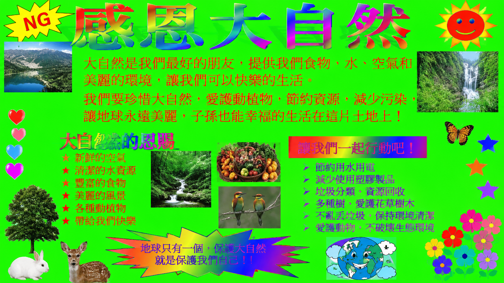
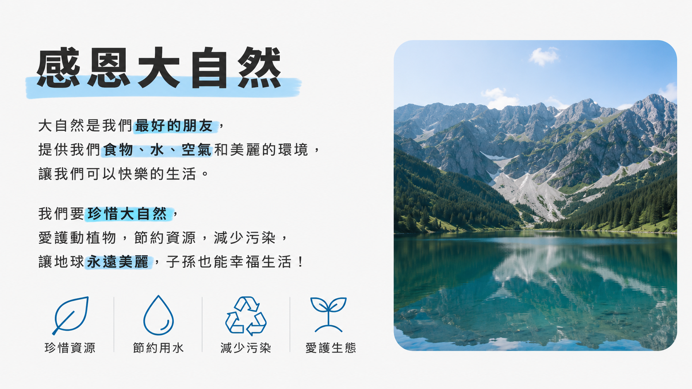
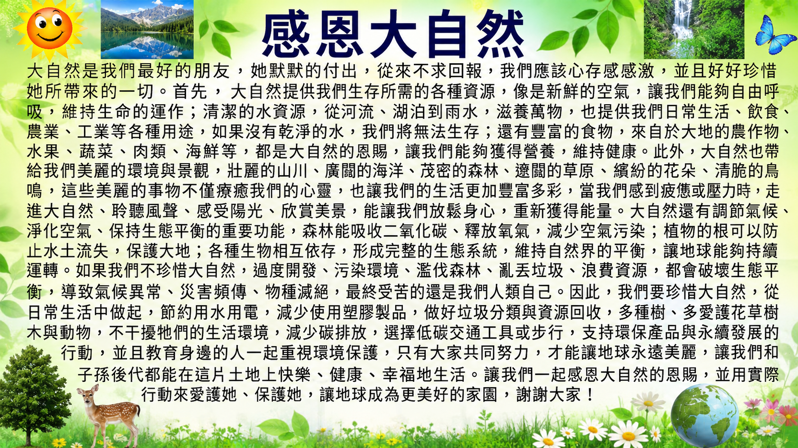
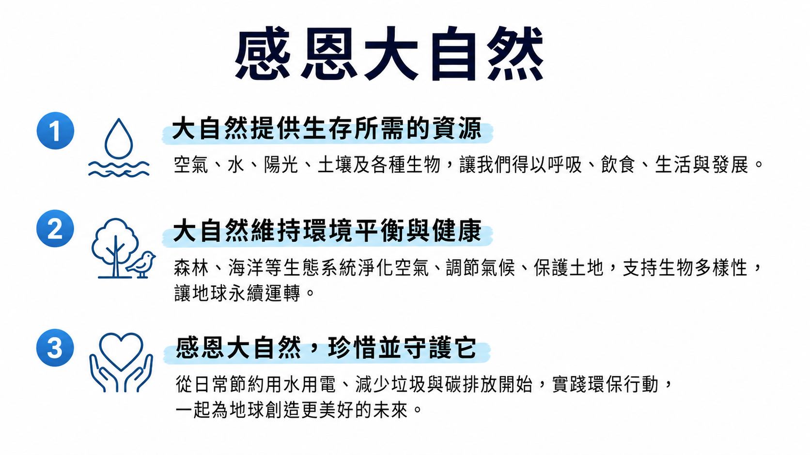
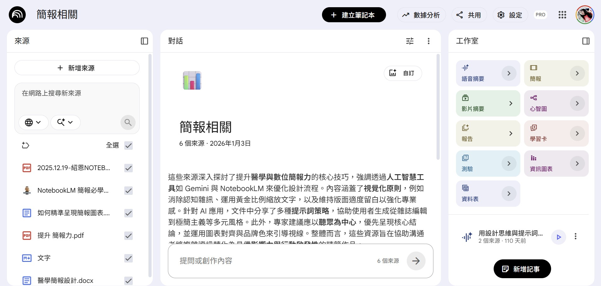

簡報只是出口，你的思想才是源頭
掃碼或在瀏覽器打開此簡報連結，在輸入框回答：你覺得簡報的目標是什麼？
📱 手機掃碼或瀏覽連結：
載入中...
✓ 送出成功！請看右側文字雲！
收到回應數：0
我們的重點是表達——但表達的對象不同，規格就不同。做簡報之前，要先判斷你的受眾需要什麼樣的規格、內容、排版：
用於閱讀，文字可以多，資訊需詳細。
用於輔助，白底黑字，重點字越大越好，絕不是逐字稿。
演講簡報每頁不超過 3 個重點，去除所有無關雜訊。
拿掉無關干擾，讓聽眾注意力聚焦在核心重點上。


給聽眾太多重點，等於沒有重點。


用圖片和關鍵詞代替長篇文字。
下面這是一張青少年製作的「感恩大自然」NG投影片，請找出 4 個嚴重錯誤！
大自然給了我們新鮮的空氣，我們每天吸入的氧氣都是植物製造的，如果沒有植物，我們人類就會窒息而死。然後大自然還給了我們乾淨的水，水是生命之源，我們身體有70%都是水組成的。還有還有，大自然還提供了各種好吃的食物，包括米飯、蔬菜、水果、還有小麥，這些都是大自然慷慨賜予我們的，所以我們一定要好好感恩大自然，千萬不能破壞環境，否則會遭到大自然的報復喔！大家一定要記住！
這堂課要傳遞的核心目標，必須是自己明確內化思考過的。
我們最該花時間的，是思考要講的內容與蒐集根據。
排版、格式轉換等重複工作，全部交給 AI。
上傳資料，AI 自動彙整重點並生成簡報。
上傳資料（PDF、文章、筆記）→ AI 分析彙整 → 一鍵生成簡報草稿
快速整理大量資料、讀書報告、彙整研究資料
版面由 AI 自動決定，彈性調整空間較有限，但快速上手優勢明顯

在 Obsidian 寫純文字備課稿，AI 轉換成互動式網頁簡報。
寫備課講義（純文字）→ Cowork AI 轉換格式 → 一鍵編譯成互動 HTML 簡報
想完全掌控內容、需要互動功能、長期重複使用的備課系統
就是這套工作流產出的成果
今天這堂課，帶走這三件事：
請將手機橫向觀看以獲得最佳閱讀體驗